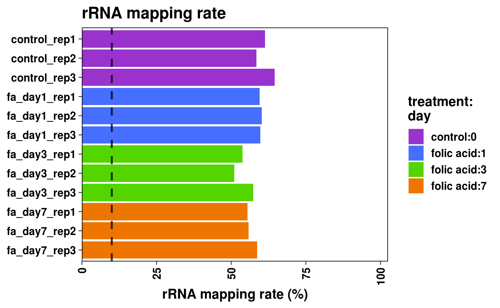
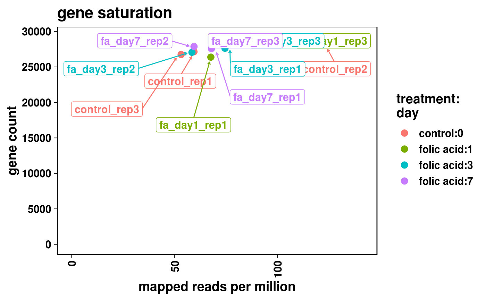
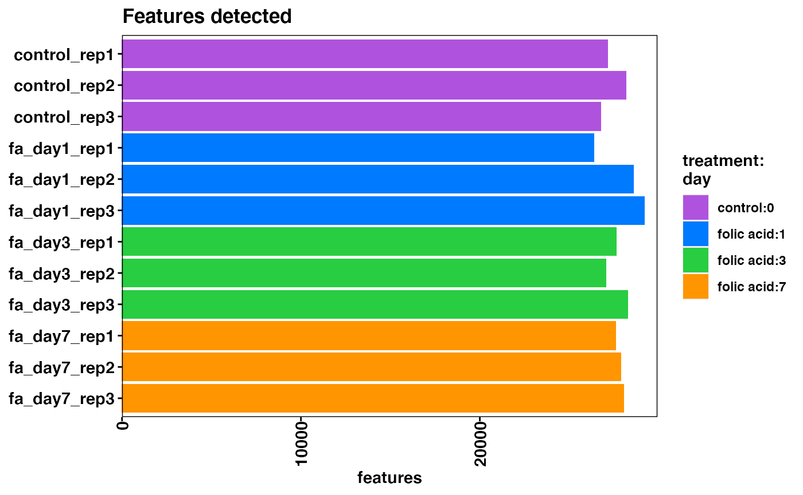
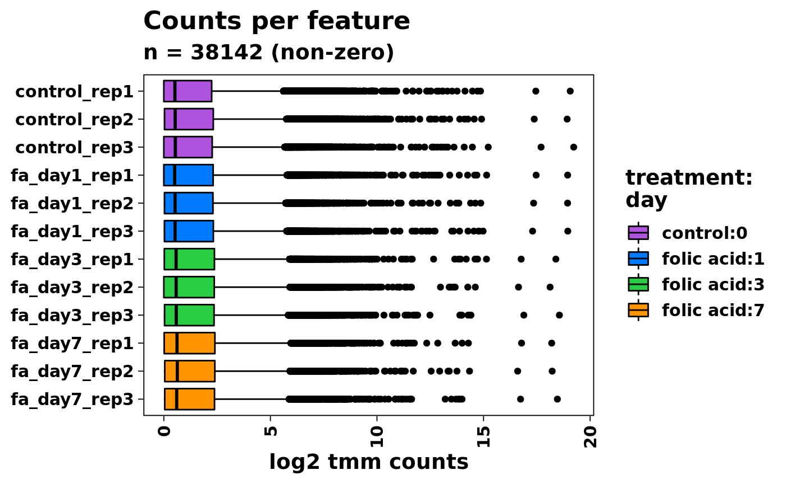
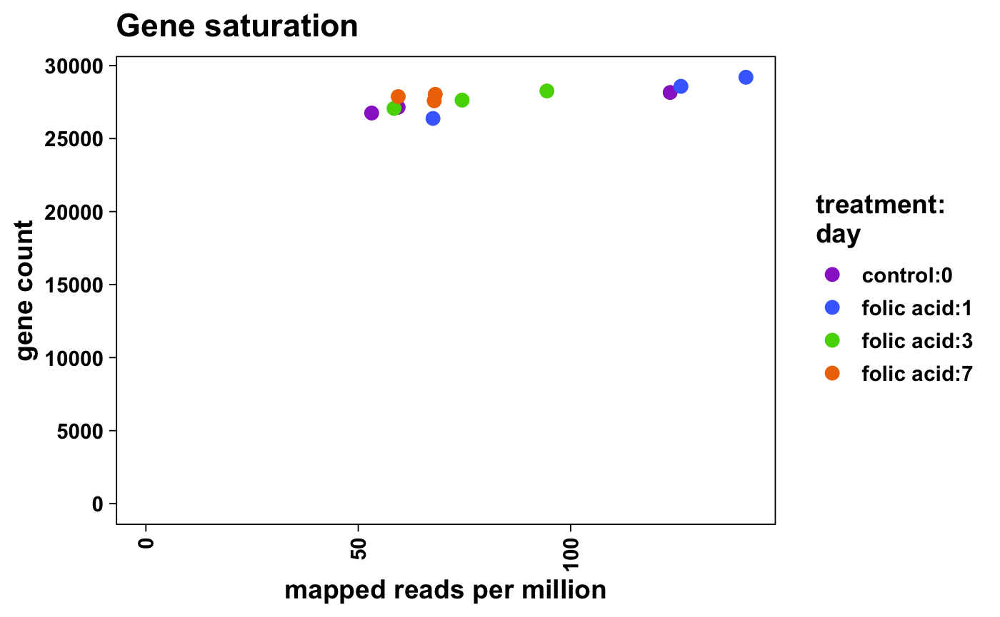
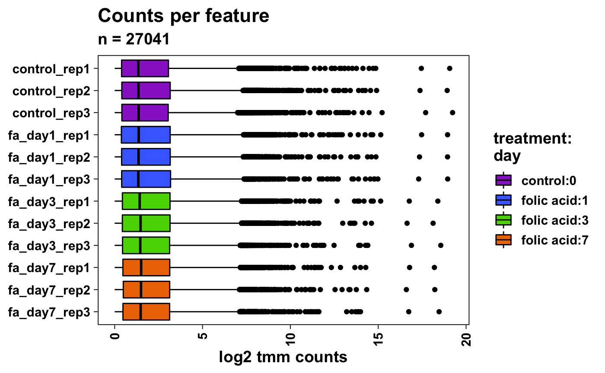
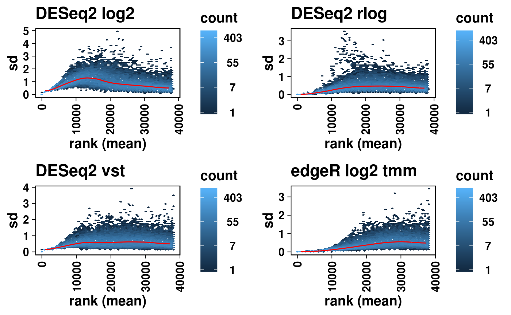
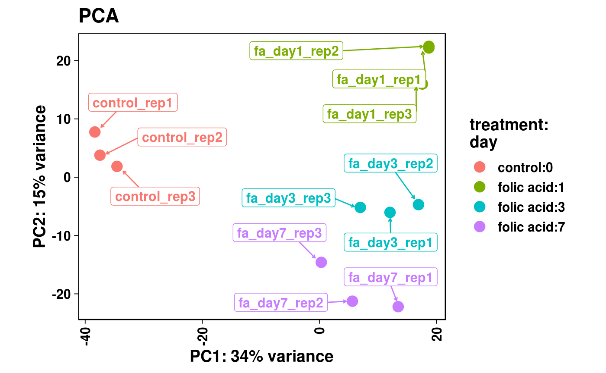
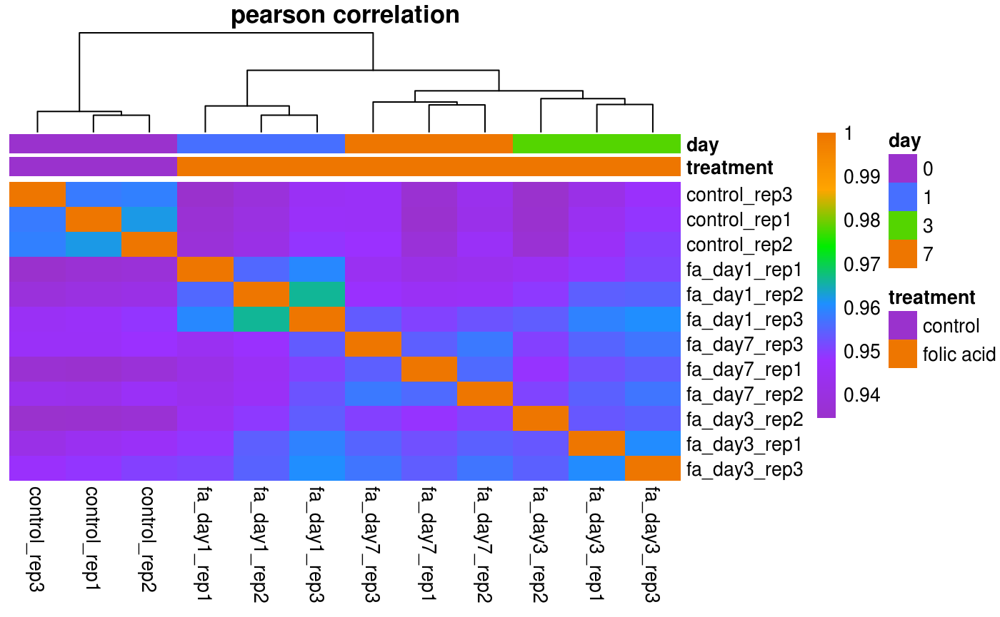

Abstract
RNA-seq analysis involves multiple steps from processing raw sequencing data to identifying, organizing, annotating, and reporting differentially expressed genes. bcbio is an open source, community-maintained framework providing automated and scalable RNA-seq methods for identifying gene abundance counts. We have developed bcbioRNASeq, a Bioconductor package that provides ready-to-render templates and wrapper functions to post-process bcbio output data. bcbioRNASeq automates the generation of high-level RNA-seq reports, including identification of differentially expressed genes, functional enrichment analysis and quality control analysis.Introduction
## Loading required package: SummarizedExperiment## Loading required package: GenomicRanges## Loading required package: stats4## Loading required package: BiocGenerics## Loading required package: parallel##
## Attaching package: 'BiocGenerics'## The following objects are masked from 'package:parallel':
##
## clusterApply, clusterApplyLB, clusterCall, clusterEvalQ,
## clusterExport, clusterMap, parApply, parCapply, parLapply,
## parLapplyLB, parRapply, parSapply, parSapplyLB## The following objects are masked from 'package:stats':
##
## IQR, mad, sd, var, xtabs## The following objects are masked from 'package:base':
##
## anyDuplicated, append, as.data.frame, basename, cbind,
## colnames, dirname, do.call, duplicated, eval, evalq, Filter,
## Find, get, grep, grepl, intersect, is.unsorted, lapply, Map,
## mapply, match, mget, order, paste, pmax, pmax.int, pmin,
## pmin.int, Position, rank, rbind, Reduce, rownames, sapply,
## setdiff, sort, table, tapply, union, unique, unsplit, which,
## which.max, which.min## Loading required package: S4Vectors##
## Attaching package: 'S4Vectors'## The following object is masked from 'package:base':
##
## expand.grid## Loading required package: IRanges## Loading required package: GenomeInfoDb## Loading required package: Biobase## Welcome to Bioconductor
##
## Vignettes contain introductory material; view with
## 'browseVignettes()'. To cite Bioconductor, see
## 'citation("Biobase")', and for packages 'citation("pkgname")'.## Loading required package: DelayedArray## Loading required package: matrixStats##
## Attaching package: 'matrixStats'## The following objects are masked from 'package:Biobase':
##
## anyMissing, rowMedians## Loading required package: BiocParallel##
## Attaching package: 'DelayedArray'## The following objects are masked from 'package:matrixStats':
##
## colMaxs, colMins, colRanges, rowMaxs, rowMins, rowRanges## The following objects are masked from 'package:base':
##
## aperm, apply, rowsum## Loading required package: basejump##
## Attaching package: 'bcbioRNASeq'## The following objects are masked from 'package:basejump':
##
## plotDEGHeatmap, plotDEGPCAFor a high-level overview of our bcbio RNA-seq analysis pipeline, including detailed explanation of the bcbioRNASeq S4 class definition, first consult our workflow paper published in F1000 Research (Steinbaugh et al. 2018). This vignette is focused on more advanced usage and edge cases that a user may encounter when attempting to load a bcbio dataset and perform downstream quality control analysis.
Note: if you use bcbioRNASeq in published research, please include this citation:
##
## To cite bcbioRNASeq in publications use:
##
## Steinbaugh MJ, Pantano L, Kirchner RD, Barrera V, Chapman BA,
## Piper ME, Mistry M, Khetani RS, Rutherford KD, Hoffman O,
## Hutchinson JN, Ho Sui SJ. (2018). bcbioRNASeq: R package for
## bcbio RNA-seq analysis. F1000Research, 6:1976. URL
## https://f1000research.com/articles/6-1976/v2. DOI
## 10.12688/f1000research.12093.2.
##
## A BibTeX entry for LaTeX users is
##
## @Article{,
## title = {{bcbioRNASeq}: {R} package for bcbio {RNA-seq} analysis},
## author = {Michael J. Steinbaugh and Lorena Pantano and Rory D. Kirchner and Victor Barrera and Brad A. Chapman and Mary E. Piper and Meeta Mistry and Radhika S. Khetani and Kayleigh D. Rutherford and Oliver Hofmann and John N. Hutchinson and Shannan J. Ho Sui},
## journal = {F1000Research},
## volume = {6},
## number = {1976},
## year = {2018},
## url = {https://f1000research.com/articles/6-1976/v2},
## doi = {10.12688/f1000research.12093.2},
## }Loading bcbio data
The bcbioRNASeq() constructor function is the main interface connecting bcbio output data to interactive use in R. It is highly customizable and supports a number of options for advanced use cases. Consult the documentation available at help(topic = "bcbioRNASeq", package = "bcbioRNASeq") for additional details.
## Dotted pair list of 16
## $ uploadDir : symbol
## $ level : language c("genes", "transcripts")
## $ caller : language c("salmon", "kallisto", "sailfish", "star", "hisat2")
## $ interestingGroups : chr "sampleName"
## $ samples : NULL
## $ censorSamples : NULL
## $ sampleMetadataFile: NULL
## $ organism : NULL
## $ genomeBuild : NULL
## $ ensemblRelease : NULL
## $ gffFile : NULL
## $ transgeneNames : NULL
## $ spikeNames : NULL
## $ vst : logi TRUE
## $ rlog : logi FALSE
## $ ... : symbolUpload directory
We have designed the constructor to work as simply as possible by default. The only required argument is uploadDir, the path to the bcbio final upload directory specified with upload: in the YAML configuration. Refer to the bcbio configuration documentation for detailed information on how to set up a bcbio run, which is outside the scope of this vignette.
For example, let’s load up the example bcbio dataset stored internally in the package.
upload_dir <- system.file("extdata/bcbio", package = "bcbioRNASeq")
stopifnot(file.exists(upload_dir))
print(upload_dir)## [1] "/Users/mike/R/x86_64-apple-darwin15.6.0-library/3.6/bcbioRNASeq/extdata/bcbio"bcbio outputs RNA-seq data in a standardized directory structure, which is described in detail in our workflow paper.
## [1] "2017-05-23_rnaseq/bcbio-nextgen-commands.log"
## [2] "2017-05-23_rnaseq/bcbio-nextgen.log"
## [3] "2017-05-23_rnaseq/combined.counts"
## [4] "2017-05-23_rnaseq/programs.txt"
## [5] "2017-05-23_rnaseq/project-summary.yaml"
## [6] "2017-05-23_rnaseq/tx2gene.csv"
## [7] "group1_1/salmon/quant.sf"
## [8] "group1_2/salmon/quant.sf"
## [9] "group2_1/salmon/quant.sf"
## [10] "group2_2/salmon/quant.sf"
## [11] "sample_metadata.csv"Counts level
By default, bcbioRNASeq imports counts at gene level, which are required for standard differential expression analysis (level = "genes"). For pseudo-aligned counts (e.g. Salmon, Kallisto, Sailfish) (Bray et al. 2016; Patro, Mount, and Kingsford 2014; Patro et al. 2017), tximport (Soneson, Love, and Robinson 2016) is used internally to aggregate transcript-level counts to gene-level counts, and generates length-scaled transcripts per million (TPM) values. For aligned counts processed with featureCounts (Liao, Smyth, and Shi 2014) (e.g. STAR, HISAT2) (Dobin et al. 2013; Dobin and Gingeras 2016; Kim, Langmead, and Salzberg 2015), these values are already returned at gene level, and therefore not handled by tximport. Once the gene-level counts are imported during the bcbioRNASeq() call, the DESeq2 package (Love, Huber, and Anders 2014) is then used to generate an internal DESeqDataSet from which we derive normalized and variance-stabilized counts.
## bcbioRNASeq 0.2.10
## class: RangedSummarizedExperiment
## dim: 502 4
## metadata(27): version level ... wd sessionInfo
## assays(5): counts tpm length normalized vst
## rownames(502): ENSMUSG00000002459 ENSMUSG00000004768 ...
## ENSMUSG00000104523 ENSMUSG00000105982
## rowData names(0):
## colnames(4): group1_1 group1_2 group2_1 group2_2
## colData names(21): sampleName description ... totalReads x5x3Bias
## Upload Dir: "/Users/mike/R/x86_64-apple-darwin15.6.0-library/3.6/bcbioRNASeq/extdata/bcbio"
## Upload Date: 2017-05-23
## R Load Date: 2019-05-13
## Level: "genes"
## Caller: "salmon"
## Organism: character(0)
## Interesting Groups: "sampleName"Alternatively, if you want to perform transcript-aware analysis, such as differential exon usage or splicing analysis, transcript-level counts can be obtained using level = "transcripts". Note that when counts are loaded at transcript level, TPMs are generated with tximport internally, but no additional normalizations or transformations normally calculated for gene-level counts with DESeq2 are generated.
## bcbioRNASeq 0.2.10
## class: RangedSummarizedExperiment
## dim: 996 4
## metadata(27): version level ... wd sessionInfo
## assays(3): counts tpm length
## rownames(996): ENSMUST00000002533 ENSMUST00000006037 ...
## ENSMUST00000208793 ENSMUST00000209020
## rowData names(0):
## colnames(4): group1_1 group1_2 group2_1 group2_2
## colData names(21): sampleName description ... totalReads x5x3Bias
## Upload Dir: "/Users/mike/R/x86_64-apple-darwin15.6.0-library/3.6/bcbioRNASeq/extdata/bcbio"
## Upload Date: 2017-05-23
## R Load Date: 2019-05-13
## Level: "transcripts"
## Caller: "salmon"
## Organism: character(0)
## Interesting Groups: "sampleName"Expression callers
Since bcbio is flexible and supports a number of expression callers, we have provided advanced options in the bcbioRNASeq() constructor to support a variety of workflows using the caller argument.
Salmon, Kallisto, and Sailfish counts are supported at either gene or transcript level. Internally, these are loaded using tximport.
## bcbioRNASeq 0.2.10
## class: RangedSummarizedExperiment
## dim: 502 4
## metadata(27): version level ... wd sessionInfo
## assays(5): counts tpm length normalized vst
## rownames(502): ENSMUSG00000002459 ENSMUSG00000004768 ...
## ENSMUSG00000104523 ENSMUSG00000105982
## rowData names(0):
## colnames(4): group1_1 group1_2 group2_1 group2_2
## colData names(21): sampleName description ... totalReads x5x3Bias
## Upload Dir: "/Users/mike/R/x86_64-apple-darwin15.6.0-library/3.6/bcbioRNASeq/extdata/bcbio"
## Upload Date: 2017-05-23
## R Load Date: 2019-05-13
## Level: "genes"
## Caller: "salmon"
## Organism: character(0)
## Interesting Groups: "sampleName"## [1] "counts" "tpm" "length" "normalized" "vst"## bcbioRNASeq 0.2.10
## class: RangedSummarizedExperiment
## dim: 996 4
## metadata(27): version level ... wd sessionInfo
## assays(3): counts tpm length
## rownames(996): ENSMUST00000002533 ENSMUST00000006037 ...
## ENSMUST00000208793 ENSMUST00000209020
## rowData names(0):
## colnames(4): group1_1 group1_2 group2_1 group2_2
## colData names(21): sampleName description ... totalReads x5x3Bias
## Upload Dir: "/Users/mike/R/x86_64-apple-darwin15.6.0-library/3.6/bcbioRNASeq/extdata/bcbio"
## Upload Date: 2017-05-23
## R Load Date: 2019-05-13
## Level: "transcripts"
## Caller: "salmon"
## Organism: character(0)
## Interesting Groups: "sampleName"## [1] "counts" "tpm" "length"STAR and HISAT2 aligned counts processed with featureCounts are also supported, but only at gene level.
## bcbioRNASeq 0.2.10
## class: RangedSummarizedExperiment
## dim: 999 4
## metadata(26): version level ... wd sessionInfo
## assays(3): counts normalized vst
## rownames(999): ENSMUSG00000001138 ENSMUSG00000001143 ...
## ENSMUSG00000109048 ENSMUSG00000109510
## rowData names(0):
## colnames(4): group1_1 group1_2 group2_1 group2_2
## colData names(21): sampleName description ... totalReads x5x3Bias
## Upload Dir: "/Users/mike/R/x86_64-apple-darwin15.6.0-library/3.6/bcbioRNASeq/extdata/bcbio"
## Upload Date: 2017-05-23
## R Load Date: 2019-05-13
## Level: "genes"
## Caller: "star"
## Organism: character(0)
## Interesting Groups: "sampleName"## [1] "counts" "normalized" "vst"Sample selection and metadata
If you’d like to load up only a subset of samples, this can be done easily using the samples argument. Note that the character vector declared here must match the description column specified in the sample metadata. For example, let’s create a bcbioRNASeq object containing only the group1_1 and group1_2 samples.
## bcbioRNASeq 0.2.10
## class: RangedSummarizedExperiment
## dim: 502 2
## metadata(27): version level ... wd sessionInfo
## assays(5): counts tpm length normalized vst
## rownames(502): ENSMUSG00000002459 ENSMUSG00000004768 ...
## ENSMUSG00000104523 ENSMUSG00000105982
## rowData names(0):
## colnames(2): group1_1 group1_2
## colData names(21): sampleName description ... totalReads x5x3Bias
## Upload Dir: "/Users/mike/R/x86_64-apple-darwin15.6.0-library/3.6/bcbioRNASeq/extdata/bcbio"
## Upload Date: 2017-05-23
## R Load Date: 2019-05-13
## Level: "genes"
## Caller: "salmon"
## Organism: character(0)
## Interesting Groups: "sampleName"## group1_1 group1_2
## "group1_1" "group1_2"Conversely, if you’re working with a large dataset and you simply want to drop a few samples, this can be accomplished with the censorSamples argument. Note that the samples argument takes priority if both are declared. For example, let’s drop the group2_2 sample from our minimal dataset.
## bcbioRNASeq 0.2.10
## class: RangedSummarizedExperiment
## dim: 502 3
## metadata(27): version level ... wd sessionInfo
## assays(5): counts tpm length normalized vst
## rownames(502): ENSMUSG00000002459 ENSMUSG00000004768 ...
## ENSMUSG00000104523 ENSMUSG00000105982
## rowData names(0):
## colnames(3): group1_1 group1_2 group2_1
## colData names(21): sampleName description ... totalReads x5x3Bias
## Upload Dir: "/Users/mike/R/x86_64-apple-darwin15.6.0-library/3.6/bcbioRNASeq/extdata/bcbio"
## Upload Date: 2017-05-23
## R Load Date: 2019-05-13
## Level: "genes"
## Caller: "salmon"
## Organism: character(0)
## Interesting Groups: "sampleName"## group1_1 group1_2 group2_1
## "group1_1" "group1_2" "group2_1"If you’re working with a bcbio run that has incorrect or outdated metadata, the simplest way to fix this issue is to pass in new metadata from an external spreadsheet (CSV or Excel) using the sampleMetadataFile argument. Note that this can also be used to subset the bcbio dataset, similar to the samples argument (see above), based on the rows that are included in the spreadsheet.
sample_metadata_file <- file.path(upload_dir, "sample_metadata.csv")
bcb <- bcbioRNASeq(
uploadDir = upload_dir,
sampleMetadataFile = sample_metadata_file
)
print(bcb)## bcbioRNASeq 0.2.10
## class: RangedSummarizedExperiment
## dim: 502 4
## metadata(27): version level ... wd sessionInfo
## assays(5): counts tpm length normalized vst
## rownames(502): ENSMUSG00000002459 ENSMUSG00000004768 ...
## ENSMUSG00000104523 ENSMUSG00000105982
## rowData names(0):
## colnames(4): group1_1 group1_2 group2_1 group2_2
## colData names(22): sampleName fileName ... totalReads x5x3Bias
## Upload Dir: "/Users/mike/R/x86_64-apple-darwin15.6.0-library/3.6/bcbioRNASeq/extdata/bcbio"
## Upload Date: 2017-05-23
## R Load Date: 2019-05-13
## Level: "genes"
## Caller: "salmon"
## Organism: character(0)
## Interesting Groups: "sampleName"
## Metadata File: "/Users/mike/R/x86_64-apple-darwin15.6.0-library/3.6/bcbioRNASeq/extdata/bcbio/sample_metadata.csv"## DataFrame with 4 rows and 5 columns
## sampleName fileName group sequenceLength
## <factor> <factor> <factor> <factor>
## group1_1 group1_1 group1_1_R1.fastq.gz ctrl 25-75
## group1_2 group1_2 group1_2_R1.fastq.gz ctrl 25-75
## group2_1 group2_1 group2_1_R1.fastq.gz ko 25-75
## group2_2 group2_2 group2_2_R1.fastq.gz ko 25-75
## interestingGroups
## <factor>
## group1_1 group1_1
## group1_2 group1_2
## group2_1 group2_1
## group2_2 group2_2Genome annotations
When analyzing a dataset against a well-annotated genome, we recommend importing the corresponding metadata using AnnotationHub and ensembldb. This functionality is natively supported in the bcbioRNASeq() constructor with using the organism, ensemblRelease, and genomeBuild arguments. This will return a GRanges object using the GenomicRanges package (Lawrence et al. 2013), which contains coordinates and rich metadata for each gene or transcript. These annotations are accessible with the rowRanges() and rowData() functions defined in the SummarizedExperiment package (Huber et al. 2015).
For example, with our internal bcbio dataset, we’re analyzing counts generated against the Ensembl Mus musculus GRCm38 genome build (release 87). These parameters can be defined in the object load call to ensure that the annotations match up exactly with the genome used.
bcb <- bcbioRNASeq(
uploadDir = upload_dir,
level = "genes",
organism = "Mus musculus",
genomeBuild = "GRCm38",
ensemblRelease = 87
)
print(bcb)## bcbioRNASeq 0.2.10
## class: RangedSummarizedExperiment
## dim: 502 4
## metadata(28): version level ... wd sessionInfo
## assays(5): counts tpm length normalized vst
## rownames(502): ENSMUSG00000002459 ENSMUSG00000004768 ...
## ENSMUSG00000104523 ENSMUSG00000105982
## rowData names(7): broadClass description ... geneName
## seqCoordSystem
## colnames(4): group1_1 group1_2 group2_1 group2_2
## colData names(21): sampleName description ... totalReads x5x3Bias
## Upload Dir: "/Users/mike/R/x86_64-apple-darwin15.6.0-library/3.6/bcbioRNASeq/extdata/bcbio"
## Upload Date: 2017-05-23
## R Load Date: 2019-05-13
## Level: "genes"
## Caller: "salmon"
## Organism: "Mus musculus"
## Interesting Groups: "sampleName"
## AnnotationHub: character(0)
## Ensembl Release: "87"
## Genome Build: "GRCm38"## name value
## 1 Db type EnsDb
## 2 Type of Gene ID Ensembl Gene ID
## 3 Supporting package ensembldb
## 4 Db created by ensembldb package from Bioconductor
## 5 script_version 0.3.1
## 6 Creation time Fri Jun 9 08:40:26 2017
## 7 ensembl_version 87
## 8 ensembl_host localhost
## 9 Organism mus_musculus
## 10 taxonomy_id 10090
## 11 genome_build GRCm38
## 12 DBSCHEMAVERSION 2.1## 'data.frame': 502 obs. of 12 variables:
## $ seqnames : Factor w/ 86 levels "3","X","16","7",..: 19 19 19 19 19 19 19 19 19 19 ...
## $ start : int 4909576 33719887 13139105 12692277 18115191 17727045 17145362 16688051 3999557 4490931 ...
## $ end : int 5070285 33742564 13374083 12861192 18145902 17766344 17164271 16709611 4409241 4497354 ...
## $ width : int 160710 22678 234979 168916 30712 39300 18910 21561 409685 6424 ...
## $ strand : Factor w/ 3 levels "+","-","*": 2 1 2 1 2 1 1 1 2 2 ...
## $ broadClass : Factor w/ 8 levels "coding","ig",..: 1 1 1 1 1 1 1 1 1 1 ...
## $ description : Factor w/ 48309 levels "1-acylglycerol-3-phosphate O-acyltransferase 1 (lysophosphatidic acid acyltransferase, alpha) [Source:MGI Symbo"| __truncated__,..: 38543 38220 12845 44134 3740 3741 6373 9508 38694 43955 ...
## $ entrezID :List of 502
## ..$ ENSMUSG00000002459: int 58175
## ..$ ENSMUSG00000004768: int 19335
## ..$ ENSMUSG00000005886: int 17978
## ..$ ENSMUSG00000016918: int 240725
## ..$ ENSMUSG00000025774: int 78081
## ..$ ENSMUSG00000025776: int 83691
## ..$ ENSMUSG00000025777: int 14545
## ..$ ENSMUSG00000025779: int 17087
## ..$ ENSMUSG00000025900: int 19888
## ..$ ENSMUSG00000025902: int 20671
## ..$ ENSMUSG00000025903: int 18777
## ..$ ENSMUSG00000025905: int 18387
## ..$ ENSMUSG00000025907: int 12421
## ..$ ENSMUSG00000025909: int 71096
## ..$ ENSMUSG00000025911: int 76187
## ..$ ENSMUSG00000025912: int 17864
## ..$ ENSMUSG00000025915: int 170755
## ..$ ENSMUSG00000025916: int 69312
## ..$ ENSMUSG00000025917: int 26754
## ..$ ENSMUSG00000025920: int 29819
## ..$ ENSMUSG00000025921: int 98711
## ..$ ENSMUSG00000025925: int 21749
## ..$ ENSMUSG00000025927: int 21419
## ..$ ENSMUSG00000025929: int 16171
## ..$ ENSMUSG00000025930: int 17681
## ..$ ENSMUSG00000025931: int 74229
## ..$ ENSMUSG00000025932: int 14048
## ..$ ENSMUSG00000025933: int 75712
## ..$ ENSMUSG00000025934: int 14859
## ..$ ENSMUSG00000025935: int 72265
## ..$ ENSMUSG00000025936: int NA
## ..$ ENSMUSG00000025937: int 212442
## ..$ ENSMUSG00000025938: int 240726
## ..$ ENSMUSG00000025939: int 66799
## ..$ ENSMUSG00000025940: int 70397
## ..$ ENSMUSG00000026058: int 170771
## ..$ ENSMUSG00000026063: int 74708
## ..$ ENSMUSG00000026064: int 19243
## ..$ ENSMUSG00000026123: int 226971
## ..$ ENSMUSG00000026124: int 12627
## ..$ ENSMUSG00000026125: int 21755
## ..$ ENSMUSG00000026126: int 19253
## ..$ ENSMUSG00000026127: int 27993
## ..$ ENSMUSG00000026131: int 13518
## ..$ ENSMUSG00000026134: int 19076
## ..$ ENSMUSG00000026141: int 12823
## ..$ ENSMUSG00000026147: int 12839
## ..$ ENSMUSG00000026153: int 68187
## ..$ ENSMUSG00000026154: int 68002
## ..$ ENSMUSG00000026155: int 98366
## ..$ ENSMUSG00000026156: int 280645
## ..$ ENSMUSG00000026158: int 70155
## ..$ ENSMUSG00000028033: int 226922
## ..$ ENSMUSG00000032719: int 226866
## ..$ ENSMUSG00000032769: int 277328
## ..$ ENSMUSG00000033569: int 210933
## ..$ ENSMUSG00000033740: int 240690
## ..$ ENSMUSG00000033774: int 226304
## ..$ ENSMUSG00000033793: int 108664
## ..$ ENSMUSG00000033813: int 21399
## ..$ ENSMUSG00000033845: int 27395
## ..$ ENSMUSG00000037503: int 214469
## ..$ ENSMUSG00000037509: int 226970
## ..$ ENSMUSG00000037529: int 21756
## ..$ ENSMUSG00000041670: int NA
## ..$ ENSMUSG00000041722: int 433278
## ..$ ENSMUSG00000041779: int 170829
## ..$ ENSMUSG00000041809: int 71877
## ..$ ENSMUSG00000041859: int 17215
## ..$ ENSMUSG00000041872: int 257630
## ..$ ENSMUSG00000042111: int 69668
## ..$ ENSMUSG00000042182: int 320705
## ..$ ENSMUSG00000042197: int 98403
## ..$ ENSMUSG00000042215: int 213539
## ..$ ENSMUSG00000042414: int 383491
## ..$ ENSMUSG00000042501: int 329093
## ..$ ENSMUSG00000042596: int 226896
## ..$ ENSMUSG00000042686: int 57339
## ..$ ENSMUSG00000043716: int 19989
## ..$ ENSMUSG00000043760: int 241035
## ..$ ENSMUSG00000045174: int 211383
## ..$ ENSMUSG00000045210: int 70675
## ..$ ENSMUSG00000045216: int 50785
## ..$ ENSMUSG00000045815: int NA
## ..$ ENSMUSG00000046101: int 240697
## ..$ ENSMUSG00000046334: int NA
## ..$ ENSMUSG00000048411: int 210962
## ..$ ENSMUSG00000048538: int NA
## ..$ ENSMUSG00000048874: int 213109
## ..$ ENSMUSG00000048960: int 109294
## ..$ ENSMUSG00000050217: int 266744
## ..$ ENSMUSG00000051285: int 319263
## ..$ ENSMUSG00000051951: int 497097
## ..$ ENSMUSG00000053185: int NA
## ..$ ENSMUSG00000054493: int NA
## ..$ ENSMUSG00000056763: int 211660
## ..$ ENSMUSG00000057715: int 320492
## ..$ ENSMUSG00000058590: int NA
## ..$ ENSMUSG00000061024: int 59014
## .. [list output truncated]
## ..- attr(*, "class")= chr "AsIs"
## $ geneBiotype : Factor w/ 44 levels "3prime_overlapping_ncRNA",..: 22 22 22 22 22 22 22 22 22 22 ...
## $ geneID : chr "ENSMUSG00000002459" "ENSMUSG00000004768" "ENSMUSG00000005886" "ENSMUSG00000016918" ...
## $ geneName : Factor w/ 49845 levels "-343C11.2","00R_AC107638.2",..: 41559 41127 37032 45836 6280 6281 9198 34206 41866 45309 ...
## $ seqCoordSystem: Factor w/ 2 levels "chromosome","scaffold": 1 1 1 1 1 1 1 1 1 1 ...Alternatively, transcript-level annotations can also be obtained automatically using this method.
bcb <- bcbioRNASeq(
uploadDir = upload_dir,
level = "transcripts",
organism = "Mus musculus",
genomeBuild = "GRCm38",
ensemblRelease = 87
)
print(bcb)## bcbioRNASeq 0.2.10
## class: RangedSummarizedExperiment
## dim: 996 4
## metadata(28): version level ... wd sessionInfo
## assays(3): counts tpm length
## rownames(996): ENSMUST00000002533 ENSMUST00000006037 ...
## ENSMUST00000208793 ENSMUST00000209020
## rowData names(13): broadClass description ... transcriptName
## transcriptSupportLevel
## colnames(4): group1_1 group1_2 group2_1 group2_2
## colData names(21): sampleName description ... totalReads x5x3Bias
## Upload Dir: "/Users/mike/R/x86_64-apple-darwin15.6.0-library/3.6/bcbioRNASeq/extdata/bcbio"
## Upload Date: 2017-05-23
## R Load Date: 2019-05-13
## Level: "transcripts"
## Caller: "salmon"
## Organism: "Mus musculus"
## Interesting Groups: "sampleName"
## AnnotationHub: character(0)
## Ensembl Release: "87"
## Genome Build: "GRCm38"## 'data.frame': 996 obs. of 18 variables:
## $ seqnames : Factor w/ 86 levels "3","X","11","16",..: 15 15 15 15 15 15 15 15 15 15 ...
## $ start : int 4909576 13142475 33761545 18115191 17145362 16688433 4344146 4490931 4807823 5588557 ...
## $ end : int 5019539 13374083 33814527 18145902 17164271 16709611 4360314 4496413 4846739 5602866 ...
## $ width : int 109964 231609 52983 30712 18910 21179 16169 5483 38917 14310 ...
## $ strand : Factor w/ 3 levels "+","-","*": 2 2 2 2 1 1 2 2 1 1 ...
## $ broadClass : Factor w/ 9 levels "coding","decaying",..: 1 1 1 1 1 1 1 1 1 1 ...
## $ description : Factor w/ 48309 levels "1-acylglycerol-3-phosphate O-acyltransferase 1 (lysophosphatidic acid acyltransferase, alpha) [Source:MGI Symbo"| __truncated__,..: 38543 12845 47868 3740 6373 9508 38694 43955 9573 14537 ...
## $ entrezID :List of 996
## ..$ ENSMUSG00000002459: int 58175
## ..$ ENSMUSG00000005886: int 17978
## ..$ ENSMUSG00000042197: int 98403
## ..$ ENSMUSG00000025774: int 78081
## ..$ ENSMUSG00000025777: int 14545
## ..$ ENSMUSG00000025779: int 17087
## ..$ ENSMUSG00000025900: int 19888
## ..$ ENSMUSG00000025902: int 20671
## ..$ ENSMUSG00000025903: int 18777
## ..$ ENSMUSG00000025905: int 18387
## ..$ ENSMUSG00000025907: int 12421
## ..$ ENSMUSG00000025911: int 76187
## ..$ ENSMUSG00000025916: int 69312
## ..$ ENSMUSG00000025917: int 26754
## ..$ ENSMUSG00000025920: int 29819
## ..$ ENSMUSG00000025921: int 98711
## ..$ ENSMUSG00000048960: int 109294
## ..$ ENSMUSG00000025925: int 21749
## ..$ ENSMUSG00000025927: int 21419
## ..$ ENSMUSG00000025929: int 16171
## ..$ ENSMUSG00000025930: int 17681
## ..$ ENSMUSG00000025933: int 75712
## ..$ ENSMUSG00000025933: int 75712
## ..$ ENSMUSG00000025932: int 14048
## ..$ ENSMUSG00000025934: int 14859
## ..$ ENSMUSG00000025935: int 72265
## ..$ ENSMUSG00000025937: int 212442
## ..$ ENSMUSG00000026058: int 170771
## ..$ ENSMUSG00000026063: int 74708
## ..$ ENSMUSG00000026064: int 19243
## ..$ ENSMUSG00000026123: int 226971
## ..$ ENSMUSG00000026124: int 12627
## ..$ ENSMUSG00000026125: int 21755
## ..$ ENSMUSG00000026126: int 19253
## ..$ ENSMUSG00000026127: int 27993
## ..$ ENSMUSG00000026134: int 19076
## ..$ ENSMUSG00000026153: int 68187
## ..$ ENSMUSG00000026154: int 68002
## ..$ ENSMUSG00000026155: int 98366
## ..$ ENSMUSG00000026158: int 70155
## ..$ ENSMUSG00000048538: int NA
## ..$ ENSMUSG00000028033: int 226922
## ..$ ENSMUSG00000042501: int 329093
## ..$ ENSMUSG00000042596: int 226896
## ..$ ENSMUSG00000041779: int 170829
## ..$ ENSMUSG00000042686: int 57339
## ..$ ENSMUSG00000041809: int 71877
## ..$ ENSMUSG00000041872: int 257630
## ..$ ENSMUSG00000101571: int NA
## ..$ ENSMUSG00000032719: int 226866
## ..$ ENSMUSG00000032769: int 277328
## ..$ ENSMUSG00000033569: int 210933
## ..$ ENSMUSG00000042111: int 69668
## ..$ ENSMUSG00000033740: int 240690
## ..$ ENSMUSG00000033774: int 226304
## ..$ ENSMUSG00000033793: int 108664
## ..$ ENSMUSG00000042197: int 98403
## ..$ ENSMUSG00000042215: int 213539
## ..$ ENSMUSG00000033845: int 27395
## ..$ ENSMUSG00000037503: int 214469
## ..$ ENSMUSG00000042414: int 383491
## ..$ ENSMUSG00000037509: int 226970
## ..$ ENSMUSG00000037529: int 21756
## ..$ ENSMUSG00000057715: int 320492
## ..$ ENSMUSG00000026141: int 12823
## ..$ ENSMUSG00000045174: int 211383
## ..$ ENSMUSG00000046101: int 240697
## ..$ ENSMUSG00000041859: int 17215
## ..$ ENSMUSG00000026147: int 12839
## ..$ ENSMUSG00000025920: int 29819
## ..$ ENSMUSG00000045210: int 70675
## ..$ ENSMUSG00000043716: int 19989
## ..$ ENSMUSG00000069620: int NA
## ..$ ENSMUSG00000048411: int 210962
## ..$ ENSMUSG00000051285: int 319263
## ..$ ENSMUSG00000042182: int 320705
## ..$ ENSMUSG00000045815: int NA
## ..$ ENSMUSG00000050217: int 266744
## ..$ ENSMUSG00000046334: int NA
## ..$ ENSMUSG00000026156: int 280645
## ..$ ENSMUSG00000025927: int 21419
## ..$ ENSMUSG00000025940: int 70397
## ..$ ENSMUSG00000053185: int NA
## ..$ ENSMUSG00000054493: int NA
## ..$ ENSMUSG00000005886: int 17978
## ..$ ENSMUSG00000025931: int 74229
## ..$ ENSMUSG00000041722: int 433278
## ..$ ENSMUSG00000051951: int 497097
## ..$ ENSMUSG00000056763: int 211660
## ..$ ENSMUSG00000091020: int NA
## ..$ ENSMUSG00000061024: int 59014
## ..$ ENSMUSG00000073730: int 66755
## ..$ ENSMUSG00000026064: int 19243
## ..$ ENSMUSG00000062588: int NA
## ..$ ENSMUSG00000025932: int 14048
## ..$ ENSMUSG00000058590: int NA
## ..$ ENSMUSG00000041670: int NA
## ..$ ENSMUSG00000033813: int 21399
## ..$ ENSMUSG00000005886: int 17978
## .. [list output truncated]
## ..- attr(*, "class")= chr "AsIs"
## $ geneBiotype : Factor w/ 44 levels "3prime_overlapping_ncRNA",..: 22 22 22 22 22 22 22 22 22 22 ...
## $ geneID : Factor w/ 50143 levels "ENSMUSG00000000001",..: 434 913 12492 5185 5187 5188 5246 5247 5248 5249 ...
## $ geneName : Factor w/ 49845 levels "-343C11.2","00R_AC107638.2",..: 41559 37032 49448 6280 9198 34206 41866 45309 34221 39248 ...
## $ seqCoordSystem : Factor w/ 2 levels "chromosome","scaffold": 1 1 1 1 1 1 1 1 1 1 ...
## $ transcriptBiotype : Factor w/ 48 levels "3prime_overlapping_ncRNA",..: 24 24 24 24 24 24 24 24 24 24 ...
## $ transcriptCdsSeqEnd : int 5019379 13224694 33814358 18145853 17161509 16709537 4352825 4493406 4845016 5602784 ...
## $ transcriptCdsSeqStart : int 4910474 13142761 33762163 18115629 17145472 16688508 4344600 4491716 4807914 5589049 ...
## $ transcriptID : chr "ENSMUST00000002533" "ENSMUST00000006037" "ENSMUST00000019861" "ENSMUST00000026876" ...
## $ transcriptName : chr "ENSMUST00000002533" "ENSMUST00000006037" "ENSMUST00000019861" "ENSMUST00000026876" ...
## $ transcriptSupportLevel: int 1 1 1 1 1 1 1 1 1 1 ...When working with a dataset generated against a poorly-annotated or non-standard genome, we provide a fallback method for loading gene annotations from a general feature format (GFF) file with the gffFile argument. If possible, we recommend providing a general transfer format (GTF) file, which is identical to GFF version 2. GFFv3 is more complicated and non-standard, but Ensembl GFFv3 files are also supported.
If your dataset contains transgenes (e.g. EGFP, TDTOMATO) or spike-ins (e.g. ERCCs), these features can be defined with the transgeneNames and spikeNames arguments, which will automatically populate the rowRanges() slot with placeholder metadata.
We recommend loading up data per genome in its own bcbioRNASeq object when possible, so that rich metadata can be imported easily. In the edge case where you need to look at multiple genomes simultaneously, set organism = NULL, and bcbioRNASeq will skip the gene annotation acquisition step.
## bcbioRNASeq 0.2.10
## class: RangedSummarizedExperiment
## dim: 502 4
## metadata(27): version level ... wd sessionInfo
## assays(5): counts tpm length normalized vst
## rownames(502): ENSMUSG00000002459 ENSMUSG00000004768 ...
## ENSMUSG00000104523 ENSMUSG00000105982
## rowData names(0):
## colnames(4): group1_1 group1_2 group2_1 group2_2
## colData names(21): sampleName description ... totalReads x5x3Bias
## Upload Dir: "/Users/mike/R/x86_64-apple-darwin15.6.0-library/3.6/bcbioRNASeq/extdata/bcbio"
## Upload Date: 2017-05-23
## R Load Date: 2019-05-13
## Level: "genes"
## Caller: "salmon"
## Organism: character(0)
## Interesting Groups: "sampleName"Variance stabilization
During the bcbioRNASeq() constructor call, variance stabilizaton of gene-level counts can be calculated automatically, and is recommended. This is performed internally by the DESeq2 package. These transformations will be slotted into assays() as vst and/or rlog matrices. The vst matrix is calculated by DESeq2::varianceStabilizingTransformation() and rlog by DESeq2::rlog(). For large datasets, rlog calculation can take a long time, so we are currently recommending calculation of only vst by default.
## [1] "counts" "tpm" "length" "normalized" "vst"
## [6] "rlog"## group1_1 group1_2 group2_1 group2_2
## Min. : 5.708 Min. : 5.708 Min. : 5.708 Min. : 5.708
## 1st Qu.: 5.708 1st Qu.: 5.708 1st Qu.: 5.708 1st Qu.: 5.708
## Median : 5.708 Median : 5.708 Median : 5.708 Median : 5.708
## Mean : 6.506 Mean : 6.506 Mean : 6.518 Mean : 6.504
## 3rd Qu.: 6.296 3rd Qu.: 6.260 3rd Qu.: 6.289 3rd Qu.: 6.261
## Max. :17.081 Max. :17.331 Max. :17.334 Max. :17.438## group1_1 group1_2 group2_1 group2_2
## Min. :-1.726 Min. :-1.727 Min. :-1.728 Min. :-1.727
## 1st Qu.: 0.000 1st Qu.: 0.000 1st Qu.: 0.000 1st Qu.: 0.000
## Median : 0.000 Median : 0.000 Median : 0.000 Median : 0.000
## Mean : 1.884 Mean : 1.887 Mean : 1.888 Mean : 1.884
## 3rd Qu.: 2.985 3rd Qu.: 2.969 3rd Qu.: 2.950 3rd Qu.: 2.979
## Max. :17.130 Max. :17.322 Max. :17.325 Max. :17.405Use case dataset
To demonstrate the functionality and configuration of the package, we have taken an experiment from the Gene Expression Omnibus (GEO) public repository of expression data to use as an example use case. The RNA-seq data is from a study of acute kidney injury in a mouse model (GSE65267) (Craciun et al. 2016). The study aims to identify differentially expressed genes in progressive kidney fibrosis and contains samples from mouse kidneys at several time points (n = 3, per time point) after folic acid treatment. From this dataset, we are using a subset of the samples for our use case: before folic acid treatment, and 1, 3, 7 days after treatment.
For the vignette, we are loading a pre-computed version of the example bcbioRNASeq object used in our workflow paper.
## bcbioRNASeq 0.2.4
## class: RangedSummarizedExperiment
## dim: 51652 12
## metadata(31): version level ... subset brio
## assays(6): counts tpm ... rlog vst
## rownames(51652): ENSMUSG00000000001 ENSMUSG00000000003 ...
## ENSMUSG00000114967 ENSMUSG00000114968
## rowData names(7): geneID geneName ... entrezID broadClass
## colnames(12): control_rep1 control_rep2 ... fa_day7_rep2
## fa_day7_rep3
## colData names(26): sampleName day ... x5x3Bias xGC
## Upload Dir: "/n/data1/cores/bcbio/bcbioRNASeq/F1000v2/GSE65267-merged/final"
## Upload Date: 2018-03-18
## R Load Date: 2018-06-01
## Level: "genes"
## Caller: "salmon"
## Organism: "Mus musculus"
## Interesting Groups: "day"
## AnnotationHub: "AH57770"
## Ensembl Release: "90"
## Genome Build: "GRCm38"Sample metadata
For reference, let’s take a look at the sample metadata. By comparison, using colData() will return all sample-level metadata, including our quality control metrics generated by bcbio. We recommend instead using sampleData() with the clean = TRUE argument in reports, which only returns factor columns of interest.
## DataFrame with 12 rows and 7 columns
## sampleName day replicate strain tissue treatment
## <factor> <factor> <factor> <factor> <factor> <factor>
## control_rep1 control_rep1 0 1 Balb/c kidney control
## control_rep2 control_rep2 0 2 Balb/c kidney control
## control_rep3 control_rep3 0 3 Balb/c kidney control
## fa_day1_rep1 fa_day1_rep1 1 1 Balb/c kidney folic acid
## fa_day1_rep2 fa_day1_rep2 1 2 Balb/c kidney folic acid
## ... ... ... ... ... ... ...
## fa_day3_rep2 fa_day3_rep2 3 2 Balb/c kidney folic acid
## fa_day3_rep3 fa_day3_rep3 3 3 Balb/c kidney folic acid
## fa_day7_rep1 fa_day7_rep1 7 1 Balb/c kidney folic acid
## fa_day7_rep2 fa_day7_rep2 7 2 Balb/c kidney folic acid
## fa_day7_rep3 fa_day7_rep3 7 3 Balb/c kidney folic acid
## interestingGroups
## <factor>
## control_rep1 0
## control_rep2 0
## control_rep3 0
## fa_day1_rep1 1
## fa_day1_rep2 1
## ... ...
## fa_day3_rep2 3
## fa_day3_rep3 3
## fa_day7_rep1 7
## fa_day7_rep2 7
## fa_day7_rep3 7Interesting groups
Groups of interest to be used for coloring and sample grouping in the quality control plots can be defined in the bcbioRNASeq object using the interestingGroups argument in the bcbioRNASeq() constructor call. Assignment method support with the interestingGroups() function is also provided, which can modify the groups of interest after the object has been created.
The interestingGroups definition defaults to sampleName, which is automatically generated from the bcbio description metadata for demultiplexed bulk RNA-seq samples. In this case, the samples will be grouped and colored uniquely.
Interesting groups must be defined using a character vector and refer to column names defined in the colData() slot of the object. Note that the bcbioRNASeq packages uses lower camel case formatting for column names (e.g. “sampleName”), so the interesting groups should be defined using camel case, not snake (e.g. “sample_name”) or dotted case (e.g. “sample.name”).
This approach was inspired by the DESeq2 package, which uses the argument intgroup in some functions, such as plotPCA() for labeling groups of interest. We took this idea and ran with it for a number of our quality control functions, which are described in detail below.
## [1] "treatment" "day"Quality control
Our workflow paper describes our quality control process in detail. In addition, our Quality Control R Markdown template contains notes detailing each metric. Here were are going into more technical detail regarding how to customize the appearance of the plots. Note that all quality control plotting functions inherit the interestingGroups defined inside the bcbioRNASeq object. You can also change this dynamially for each function call using the interestingGroups argument.

Mapping rates
Note that the overall mapping rate is relatively low per sample, while the exonic mapping rate is acceptable. High quality samples should have low intronic mapping rate, and high values are indicative of sample degradation and/or contamination.



rRNA mapping rate
Note that the samples here have a high rRNA mapping rate. This can be indicative of the polyA enrichment or ribo depletion protocol not having removed all ribosomal RNA (rRNA) transcripts. This will reduce the number of biologically meaningful reads in the experiment and is best avoided.

5’->3’ bias
RNA-seq data can have specific biases at either the 5’ or 3’ end of sequenced fragments. It is common to see a small amount of bias, especially if polyA enrichment was performed, or if there is any sample degradation. If a large amount of bias is observed here, be sure to analyze the samples with a Bioanalyzer and check the RIN scores.

Gene distributions



## 38142 non-zero genes detected## Applying trimmed mean of M-values (TMM) normalization
## 38142 non-zero genes detected
## Applying trimmed mean of M-values (TMM) normalization
Dispersion
The following plot shows the dispersion by mean of normalized counts. We expect the dispersion to decrease as the mean of normalized counts increases.
## Coercing bcbioRNASeq to DESeqDataSet with DESeq2 1.24.0## converting counts to integer mode## estimating size factors## estimating dispersions## gene-wise dispersion estimates## mean-dispersion relationship## final dispersion estimates## fitting model and testing## -- replacing outliers and refitting for 3103 genes
## -- DESeq argument 'minReplicatesForReplace' = 7
## -- original counts are preserved in counts(dds)## estimating dispersions## fitting model and testing
Variance stabilization
These plots show the standard deviation of normalized counts using log2(), varianceStabilizingTransform(), rlog(), and tmm() by rank(mean). Note that all counts shown are log2 scale.

Sample similarity
We can visualize sample similarity with principal component analysis (PCA) and hierarchical clustering of sample correlations. These functions support multiple normalization methods with the normalized argument. We recommend using normalized = "vst" by default.
Let’s plot the PCA using our vst counts, the current recommended default.
## Using vst counts## Plotting PCA using 500 genes.
## Using vst counts
## Plotting PCA using 500 genes.
Let’s visualize the rlog counts for comparison. The performance is similar overall, with some slight differences, but the grouping more or less remains the same.
## Using rlog counts## Plotting PCA using 500 genes.
## Using rlog counts
## Plotting PCA using 500 genes.
Generally, the varianceStabilizationTransformation() and rlog() functions provide similar performance, as seen here.
## Using vst counts## Calculating correlation matrix using pearson method.
## Using vst counts## Calculating correlation matrix using spearman method.
plotCorrelationHeatmap(
object = bcb,
method = "pearson",
normalized = "rlog",
color = viridis::viridis
)## Using rlog counts## Calculating correlation matrix using pearson method.
plotCorrelationHeatmap(
object = bcb,
method = "spearman",
normalized = "rlog",
color = viridis::plasma
)## Using rlog counts## Calculating correlation matrix using spearman method.
Saving counts
The counts() function returns the abundance estimates generated by Salmon. Read counts for each sample in the dataset are aggregated into a matrix, in which columns correspond to samples and rows represent genes. Multiple normalized counts matrices are saved in the bcbioRNASeq object, and are accessible with normalized argument:
-
FALSE: Raw counts (default). -
TRUE: DESeq2 normalized counts. -
"tpm": Transcripts per million, calculated by tximport. -
"tmm": Trimmed mean of M-values normalization method. -
"vst": Variance stabilization transformation. -
"rlog": Regularized log transformation. -
"rle": Relative log expression transformation.
We recommend saving the raw counts, normalized counts, TPMs, and variance-stabilized counts to disk both in binary R Data and CSV formats.
Differential expression
bcbioRNASeq integrates with DESeq2, which we recommend for differential expression. To prepare our dataset for analysis, we need to coerce the bcbioRNASeq object to a DESeqDataSet. Use the as() function or refer to the DESeq2 documentation for the DESeqDataSet() constructor.
## Coercing bcbioRNASeq to DESeqDataSet with DESeq2 1.24.0## converting counts to integer mode## class: DESeqDataSet
## dim: 51652 12
## metadata(31): version level ... subset brio
## assays(6): counts tpm ... rlog vst
## rownames(51652): ENSMUSG00000000001 ENSMUSG00000000003 ...
## ENSMUSG00000114967 ENSMUSG00000114968
## rowData names(7): geneID geneName ... entrezID broadClass
## colnames(12): control_rep1 control_rep2 ... fa_day7_rep2
## fa_day7_rep3
## colData names(26): sampleName day ... x5x3Bias xGCSince both bcbioRNASeq and DESeqDataSet classes extend RangedSummarizedExperiment, internally we coerce the original bcbioRNASeq object to a RangedSummarizedExperiment and then use the DESeqDataSet() constructor, which requires a SummarizedExperiment with integer counts.
Here is the source code responsible for handing off the data to DESeq2.
## Method Definition:
##
## function (from, to = "DESeqDataSet", strict = TRUE)
## {
## validObject(from)
## if (metadata(from)[["level"]] != "genes") {
## stop("Gene-level counts are required")
## }
## message(paste("Coercing bcbioRNASeq to DESeqDataSet with DESeq2",
## packageVersion("DESeq2")))
## rse <- as(from, "RangedSummarizedExperiment")
## assay(rse) <- round(assay(rse), digits = 0L)
## to <- DESeqDataSet(se = rse, design = ~1L)
## interestingGroups(to) <- interestingGroups(from)
## validObject(to)
## to
## }
## <bytecode: 0x7fe4ba675100>
## <environment: namespace:bcbioRNASeq>
##
## Signatures:
## from to
## target "bcbioRNASeq" "DESeqDataSet"
## defined "bcbioRNASeq" "DESeqDataSet"Now you can perform differential expression analysis with DESeq2. The authors of that package have provided a number of detailed, well documented references online:
- Analyzing RNA-seq data with DESeq2.
- RNA-Seq workflow: gene-level exploratory analysis and differential expression.
- Differential analyses for RNA-seq: transcript-level estimates improve gene-level inferences.
We also provide a parameterized R Markdown template for standard DESeq2 differential expression, supporting analysis and visualization of multiple contrasts inside a single report. In our workflow paper, we also describe an example LRT analysis, and advanced edge-case templates are available inside our hbcABC package, which is a current work in progress.
Functional analysis
We provide an R Markdown template for gene set enrichment analysis (GSEA) and Kyoto Encyclopedia of Genes and Genomes (KEGG) pathway enrichment analysis (Kanehisa and Goto 2000; Subramanian et al. 2005), which leverages the functionality of the clusterProfiler package (Yu et al. 2012). This workflow is described in detail in our workflow paper, and is outside the scope of this advanced use vignette. For more information on functional analysis, consult the clusterProfiler vignette, which is extremely detailed and thorough.
R session information
## R version 3.6.0 (2019-04-26)
## Platform: x86_64-apple-darwin15.6.0 (64-bit)
## Running under: macOS Mojave 10.14.4
##
## Matrix products: default
## BLAS: /Library/Frameworks/R-3.6.0.framework/Versions/3.6/Resources/lib/libRblas.0.dylib
## LAPACK: /Library/Frameworks/R-3.6.0.framework/Versions/3.6/Resources/lib/libRlapack.dylib
##
## locale:
## [1] en_US.UTF-8/en_US.UTF-8/en_US.UTF-8/C/en_US.UTF-8/en_US.UTF-8
##
## attached base packages:
## [1] parallel stats4 datasets utils grDevices graphics stats
## [8] methods base
##
## other attached packages:
## [1] hexbin_1.27.2 bcbioRNASeq_0.2.10
## [3] basejump_0.10.9 SummarizedExperiment_1.14.0
## [5] DelayedArray_0.10.0 BiocParallel_1.18.0
## [7] matrixStats_0.54.0 Biobase_2.44.0
## [9] GenomicRanges_1.36.0 GenomeInfoDb_1.20.0
## [11] IRanges_2.18.0 S4Vectors_0.22.0
## [13] BiocGenerics_0.30.0 BiocStyle_2.12.0
##
## loaded via a namespace (and not attached):
## [1] freerange_0.1.6 R.utils_2.8.0
## [3] tidyselect_0.2.5 RSQLite_2.1.1
## [5] AnnotationDbi_1.46.0 htmlwidgets_1.3
## [7] grid_3.6.0 munsell_0.5.0
## [9] preprocessCore_1.46.0 codetools_0.2-16
## [11] withr_2.1.2 colorspace_1.4-1
## [13] knitr_1.22 rstudioapi_0.10
## [15] SingleCellExperiment_1.6.0 assertive.base_0.0-7
## [17] rdrop2_0.8.1 labeling_0.3
## [19] acidplots_0.2.4 lasso2_1.2-20
## [21] tximport_1.12.0 GenomeInfoDbData_1.2.1
## [23] mnormt_1.5-5 bit64_0.9-7
## [25] pheatmap_1.0.12 rprojroot_1.3-2
## [27] Matrix.utils_0.9.7 generics_0.0.2
## [29] xfun_0.6 BiocFileCache_1.8.0
## [31] R6_2.4.0 clue_0.3-57
## [33] assertive.sets_0.0-3 locfit_1.5-9.1
## [35] AnnotationFilter_1.8.0 bitops_1.0-6
## [37] reshape_0.8.8 assertthat_0.2.1
## [39] promises_1.0.1 scales_1.0.0
## [41] nnet_7.3-12 gtable_0.3.0
## [43] affy_1.62.0 ensembldb_2.8.0
## [45] rlang_0.3.4 genefilter_1.66.0
## [47] GlobalOptions_0.1.0 splines_3.6.0
## [49] rtracklayer_1.44.0 lazyeval_0.2.2
## [51] acepack_1.4.1 broom_0.5.2
## [53] checkmate_1.9.3 BiocManager_1.30.4
## [55] yaml_2.2.0 reshape2_1.4.3
## [57] GenomicFeatures_1.36.0 backports_1.1.4
## [59] httpuv_1.5.1 syntactic_0.1.9
## [61] Hmisc_4.2-0 tools_3.6.0
## [63] bookdown_0.10 psych_1.8.12
## [65] logging_0.9-107 ggplot2_3.1.1
## [67] affyio_1.54.0 assertive.strings_0.0-3
## [69] RColorBrewer_1.1-2 goalie_0.2.16
## [71] ggdendro_0.1-20 sessioninfo_1.1.1
## [73] Rcpp_1.0.1 plyr_1.8.4
## [75] base64enc_0.1-3 progress_1.2.1
## [77] zlibbioc_1.30.0 purrr_0.3.2
## [79] RCurl_1.95-4.12 prettyunits_1.0.2
## [81] rpart_4.1-15 viridis_0.5.1
## [83] GetoptLong_0.1.7 cowplot_0.9.4
## [85] haven_2.1.0 grr_0.9.5
## [87] ggrepel_0.8.1 cluster_2.0.9
## [89] fs_1.3.1 magrittr_1.5
## [91] data.table_1.12.2 openxlsx_4.1.0
## [93] circlize_0.4.6 ProtGenerics_1.16.0
## [95] hms_0.4.2 mime_0.6
## [97] evaluate_0.13 bioverbs_0.1.19
## [99] xtable_1.8-4 XML_3.98-1.19
## [101] rio_0.5.16 readxl_1.3.1
## [103] gridExtra_2.3 shape_1.4.4
## [105] compiler_3.6.0 biomaRt_2.40.0
## [107] tibble_2.1.1 crayon_1.3.4
## [109] transformer_0.1.11 R.oo_1.22.0
## [111] htmltools_0.3.6 later_0.8.0
## [113] Formula_1.2-3 tidyr_0.8.3
## [115] geneplotter_1.62.0 DBI_1.0.0
## [117] assertive.files_0.0-2 dbplyr_1.4.0
## [119] ComplexHeatmap_2.0.0 MASS_7.3-51.4
## [121] rappdirs_0.3.1 assertive.numbers_0.0-2
## [123] Matrix_1.2-17 readr_1.3.1
## [125] brio_0.2.1 cli_1.1.0
## [127] vsn_3.52.0 assertive.types_0.0-3
## [129] R.methodsS3_1.7.1 forcats_0.4.0
## [131] pkgconfig_2.0.2 pkgdown_1.3.0.9000
## [133] GenomicAlignments_1.20.0 foreign_0.8-71
## [135] xml2_1.2.0 roxygen2_6.1.1
## [137] annotate_1.62.0 XVector_0.24.0
## [139] stringr_1.4.0 digest_0.6.18
## [141] ConsensusClusterPlus_1.48.0 Biostrings_2.52.0
## [143] cellranger_1.1.0 rmarkdown_1.12
## [145] htmlTable_1.13.1 edgeR_3.26.1
## [147] curl_3.3 shiny_1.3.2
## [149] Rsamtools_2.0.0 commonmark_1.7
## [151] rjson_0.2.20 jsonlite_1.6
## [153] nlme_3.1-140 DEGreport_1.20.0
## [155] viridisLite_0.3.0 desc_1.2.0
## [157] limma_3.40.0 pillar_1.4.0
## [159] lattice_0.20-38 Nozzle.R1_1.1-1
## [161] httr_1.4.0 survival_2.44-1.1
## [163] interactiveDisplayBase_1.22.0 glue_1.3.1
## [165] zip_2.0.2 UpSetR_1.3.3
## [167] png_0.1-7 bit_1.1-14
## [169] bcbioBase_0.6.4 assertive.properties_0.0-4
## [171] stringi_1.4.3 blob_1.1.1
## [173] DESeq2_1.24.0 AnnotationHub_2.16.0
## [175] latticeExtra_0.6-28 memoise_1.1.0
## [177] dplyr_0.8.0.1References
The papers and software cited in our workflows are available as a shared library on Paperpile.
Bray, Nicolas L, Harold Pimentel, Páll Melsted, and Lior Pachter. 2016. “Near-Optimal Probabilistic RNA-seq Quantification.” Nat. Biotechnol. 34 (5): 525–27. https://doi.org/10.1038/nbt.3519.
Craciun, Florin L, Vanesa Bijol, Amrendra K Ajay, Poornima Rao, Ramya K Kumar, John Hutchinson, Oliver Hofmann, et al. 2016. “RNA Sequencing Identifies Novel Translational Biomarkers of Kidney Fibrosis.” J. Am. Soc. Nephrol. 27 (6): 1702–13. https://doi.org/10.1681/ASN.2015020225.
Dobin, Alexander, Carrie A Davis, Felix Schlesinger, Jorg Drenkow, Chris Zaleski, Sonali Jha, Philippe Batut, Mark Chaisson, and Thomas R Gingeras. 2013. “STAR: Ultrafast Universal RNA-seq Aligner.” Bioinformatics 29 (1): 15–21. https://doi.org/10.1093/bioinformatics/bts635.
Dobin, Alexander, and Thomas R Gingeras. 2016. “Optimizing RNA-Seq Mapping with STAR.” Methods Mol. Biol. 1415: 245–62. https://doi.org/10.1007/978-1-4939-3572-7\_13.
Huber, Wolfgang, Vincent J Carey, Robert Gentleman, Simon Anders, Marc Carlson, Benilton S Carvalho, Hector Corrada Bravo, et al. 2015. “Orchestrating High-Throughput Genomic Analysis with Bioconductor.” Nat. Methods 12 (2): 115–21. https://doi.org/10.1038/nmeth.3252.
Kanehisa, M, and S Goto. 2000. “KEGG: Kyoto Encyclopedia of Genes and Genomes.” Nucleic Acids Res. 28 (1): 27–30. https://www.ncbi.nlm.nih.gov/pubmed/10592173.
Kim, Daehwan, Ben Langmead, and Steven L Salzberg. 2015. “HISAT: A Fast Spliced Aligner with Low Memory Requirements.” Nat. Methods 12 (4): 357–60. https://doi.org/10.1038/nmeth.3317.
Lawrence, Michael, Wolfgang Huber, Hervé Pagès, Patrick Aboyoun, Marc Carlson, Robert Gentleman, Martin T Morgan, and Vincent J Carey. 2013. “Software for Computing and Annotating Genomic Ranges.” PLoS Comput. Biol. 9 (8): e1003118. https://doi.org/10.1371/journal.pcbi.1003118.
Liao, Yang, Gordon K Smyth, and Wei Shi. 2014. “FeatureCounts: An Efficient General Purpose Program for Assigning Sequence Reads to Genomic Features.” Bioinformatics 30 (7): 923–30. https://doi.org/10.1093/bioinformatics/btt656.
Love, Michael I, Wolfgang Huber, and Simon Anders. 2014. “Moderated Estimation of Fold Change and Dispersion for RNA-seq Data with DESeq2.” Genome Biol. 15 (12): 550. https://doi.org/10.1186/s13059-014-0550-8.
Patro, Rob, Geet Duggal, Michael I Love, Rafael A Irizarry, and Carl Kingsford. 2017. “Salmon Provides Fast and Bias-Aware Quantification of Transcript Expression.” Nat. Methods 14 (4): 417–19. https://doi.org/10.1038/nmeth.4197.
Patro, Rob, Stephen M Mount, and Carl Kingsford. 2014. “Sailfish Enables Alignment-Free Isoform Quantification from RNA-seq Reads Using Lightweight Algorithms.” Nat. Biotechnol. 32 (5): 462–64. https://doi.org/10.1038/nbt.2862.
Soneson, Charlotte, Michael I Love, and Mark D Robinson. 2016. “Differential Analyses for RNA-seq: Transcript-Level Estimates Improve Gene-Level Inferences.” F1000Res. 4 (December). https://doi.org/10.12688/f1000research.7563.1.
Steinbaugh, Michael J, Lorena Pantano, Rory D Kirchner, Victor Barrera, Brad A Chapman, Mary E Piper, Meeta Mistry, et al. 2018. “bcbioRNASeq: R Package for Bcbio RNA-seq Analysis.” F1000Res. 6 (June). https://doi.org/10.12688/f1000research.12093.2.
Subramanian, Aravind, Pablo Tamayo, Vamsi K Mootha, Sayan Mukherjee, Benjamin L Ebert, Michael A Gillette, Amanda Paulovich, et al. 2005. “Gene Set Enrichment Analysis: A Knowledge-Based Approach for Interpreting Genome-Wide Expression Profiles.” Proc. Natl. Acad. Sci. U. S. A. 102 (43): 15545–50. https://doi.org/10.1073/pnas.0506580102.
Yu, Guangchuang, Li-Gen Wang, Yanyan Han, and Qing-Yu He. 2012. “ClusterProfiler: An R Package for Comparing Biological Themes Among Gene Clusters.” OMICS 16 (5): 284–87. https://doi.org/10.1089/omi.2011.0118.